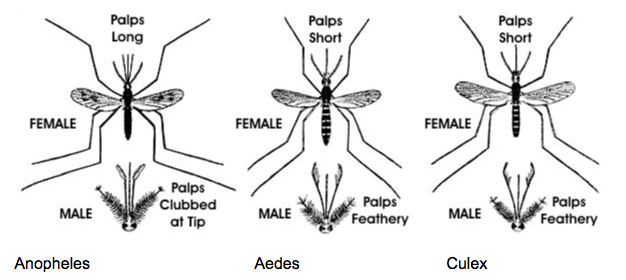

The most prominent feature of malaria is fever. The classic symptoms of fever with a regular recurring pattern every 2–3 days is not usually present when the disease begins. Irregular fever also may occur due to mixed infections, ineffective use of prophylactic drugs and partial treatment. Patients commonly feel well on the days when fever is absent. A presumptive diagnosis of malaria should be made for any person with a high fever who has been to a malarious area, particularly when that travel was recent. Early diagnosis with prompt appropriate treatment is essential, as malaria can be a fatal disease. If the initial blood film is negative for malarial parasites, the test should be repeated within 12–24 hours and preferably when the person’s temperature is rising. One negative test does not exclude the diagnosis, particularly if the patient has taken antimalarials, which may result in partial treatment of the infection. Rapidly rising temperature is commonly associated with rigors (shaking chills), muscle pains, back pain, nausea and headache. The episode frequently ends with profuse sweating. Other symptoms may include confusion or other neurological signs, diarrhoea, dark urine, jaundice, cough and respiratory distress. Severe complications, usually with P. falciparum infections, can include coma, acute encephalopathy, cerebral oedema, vomiting, renal failure, severe anaemia, thrombocytopenia, pulmonary oedema, shock, acidosis, coagulation defects, respiratory failure, liver failure and death. Case-fatality rates in non-immune people may be 10–40 perjapanese encephalitisent without treatment. Atypical presentations that can occur predominantly involve a diarrhoeal illness and have resulted in delayed diagnosis and death. Other infections, such as the bacterial infection, typhoid fever, may occur concurrently. Such infections should be looked for, especially if the patient fails to respond well to appropriate treatment. Individuals who are partially immune or who have been taking antimalarial chemoprophylaxis may show an atypical clinical picture with wide variations in the incubation period. Malaria due to species other than P. falciparum is generally not life-threatening except in the very young, the very old and those with immunodeficiency or other concurrent disease. Malaria poses a serious threat to pregnant women, as it can compromise foetal development, possibly resulting in premature labour or miscarriage. Pregnant women should be advised to avoid travel to malarious areas if possible. Similarly, malaria presents considerable risks for children, particularly the very young, and the choice of suitable drugs is limited. Mosquito avoidance measures should be emphasised.